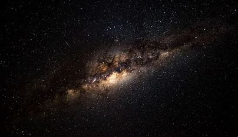

Overview of Indian Space Exploration

Satellite Programs

Space Technology & Research

Current & Upcoming Missions
Astronomy & Astrophysics

Space Tourism and Private Ventures

Education and Outreach

Cultural Impact of Space Exploration

Sustainability in space